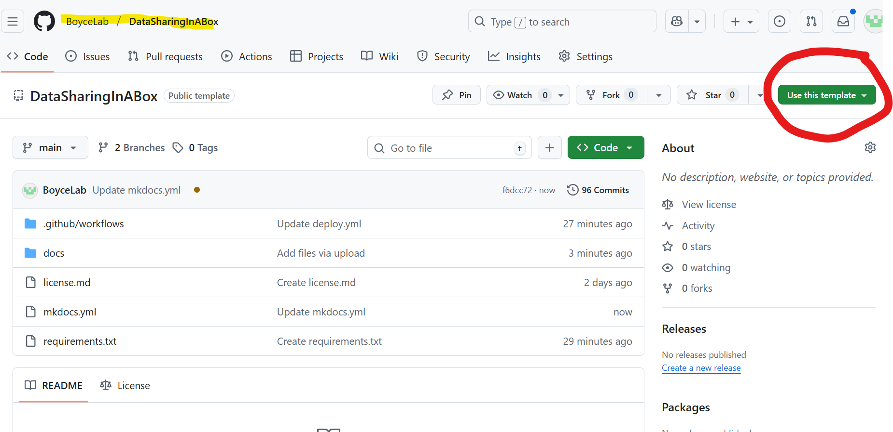

Data Sharing In A Box
Sample Content Only
This site is a template with example content to help registry teams publish their data access documentation.
Please review and customize every page before sharing this site publicly, especially sections about governance, IRB, and consent.
Remove any placeholder files or references that do not apply to your project.
☀️ How to Set Up and Use the Patient Registry Template
This template helps patient registry teams or patient advocacy organizations create a transparent, accessible data sharing website. It’s built using MkDocs with the Material theme.
1. Copy This Template Repository
You have two options:
- Use GitHub’s “Use this template” button (recommended):
- Go to the template repository.
- Click "Use this template" to create your own copy.
- Name your new repository (e.g.,
my-registry-docs) and choose whether it will be public or private.
Screenshot

- Manual download:
- Download this repo as a ZIP and upload the contents to a new GitHub repo.
- Or use
git cloneand rename the folder.
2. Customize Your Site Metadata
Open mkdocs.yml and update the following:
site_name: Name of your registry or data program.site_url: Optional, for your published documentation URL.repo_url/repo_name: To link back to your GitHub repo.logo:andfavicon:paths: Point to your own organization’s branding underassets/img/.
3. Review and Update All Pages
All Markdown content lives in the docs/ folder. Use this checklist to customize the files:
| File | Customize This Content |
|---|---|
index.md |
Welcome message and registry overview |
researchers.md |
Data request process — revise for your workflow |
survey.md |
End-user intake survey — update to reflect your IRB/data needs |
cohort-overview.md |
Describe the population, enrollment, and structure of your data |
data-dictionary.md |
Your variable-level data documentation |
derived-fields.md |
Add any harmonized, derived, or computed variables |
dua.md |
Full or summary of your data use terms |
irb.md |
IRB protocol number, contact, or exemption justification |
faq.md |
Questions data users often ask |
key_resources.md |
Links to internal and external tools/policies |
acknowledgements.md |
People or groups who contributed to the data/registry |
data-platforms.md |
Tools or environments you support (e.g. enclaves, APIs) |
data-readiness.md |
A checklist for evaluating your registry’s documentation before sharing |
external-sharing.md |
Considerations before joining data aggregation efforts (e.g. privacy, harmonization, governance alignment) |
🗑️ Remove or hide pages that aren’t relevant to your registry:
- To delete: Remove the file in
docs/and its entry inmkdocs.yml - To hide: Remove from
mkdocs.ymlonly - To rename: Rename both the file and its nav entry
4. Preview Your Site Locally (Optional)
pip install mkdocs mkdocs-material
mkdocs serve
Then open http://127.0.0.1:8000 in a browser to preview your site before publishing.
5. Publish with GitHub Pages
Once GitHub Pages is enabled:
- Push changes to
main. - GitHub Actions will build and publish your site automatically.
- In your repo settings, go to Settings > Pages and confirm the site is deployed.
✅ Pro Tips
- 🧪 Use the “End User Survey” to collect use-case info from data requestors
- 🔐 Be clear about what’s required before data access (DUA, IRB, etc.)
- 🗝 Use the “External Sharing” page to guide internal governance decisions
License
This template is provided under a CC BY 4.0 license. You may adapt it freely, but please credit the original source.
Learn more